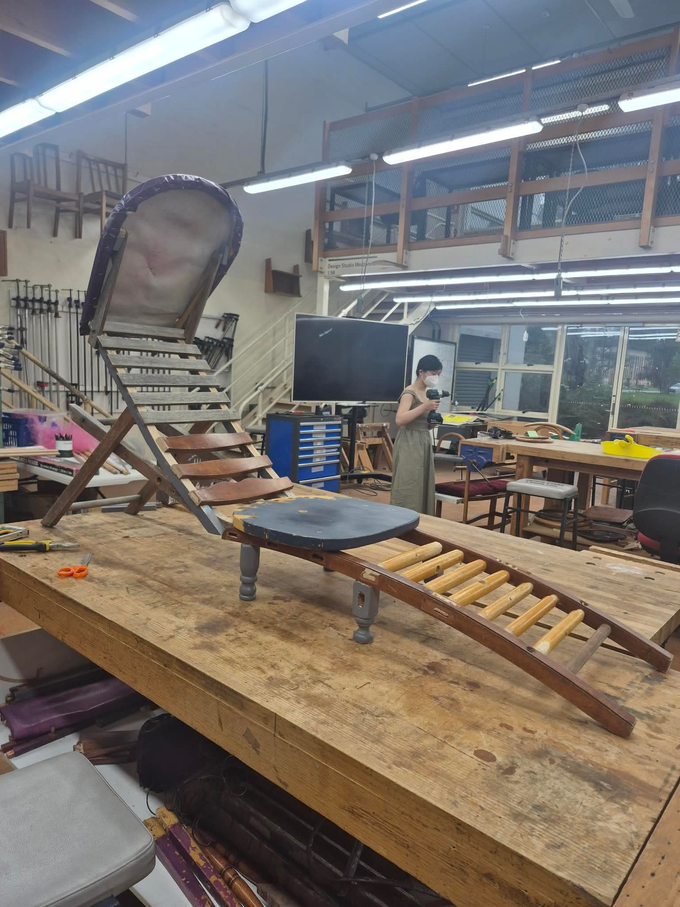
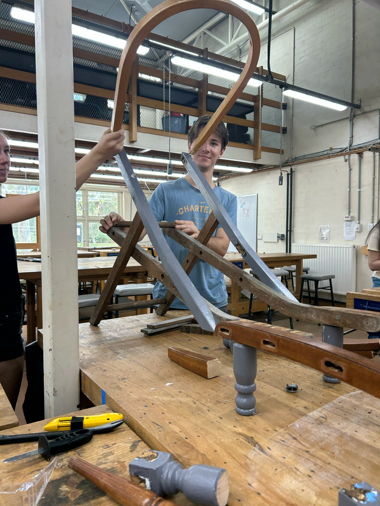
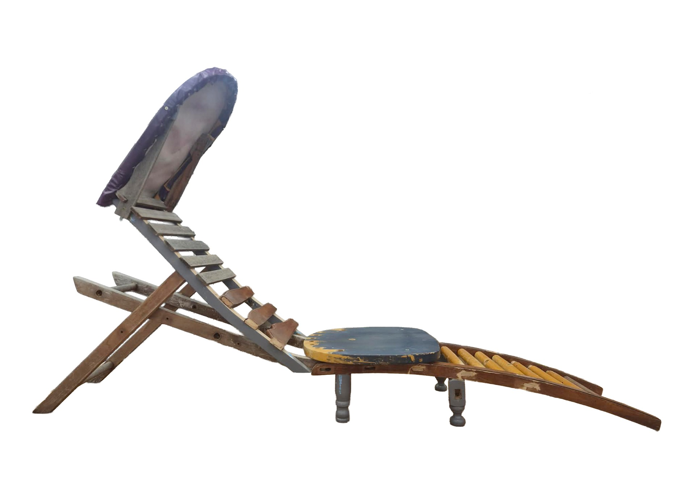
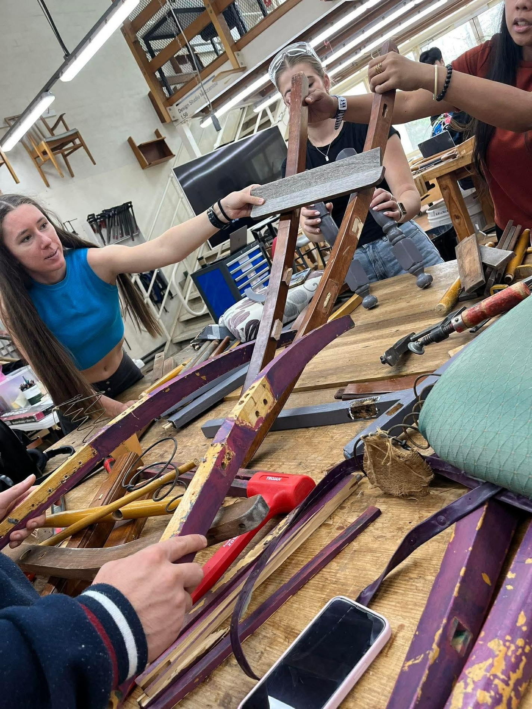
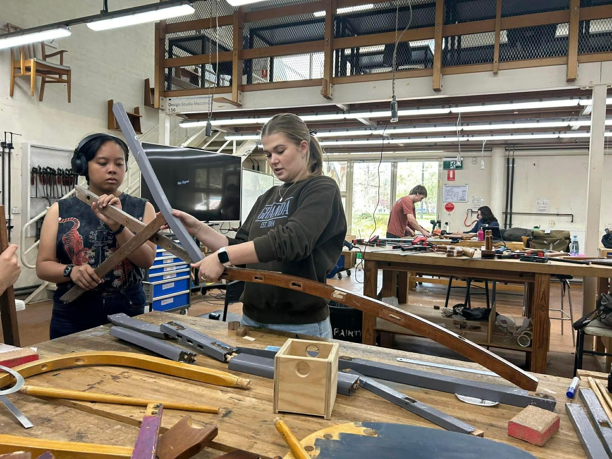
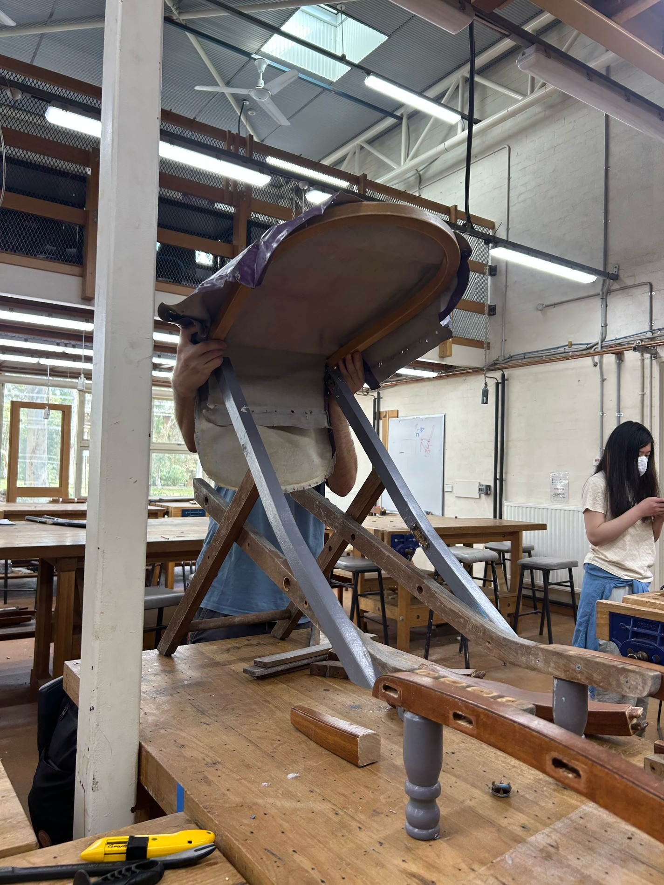
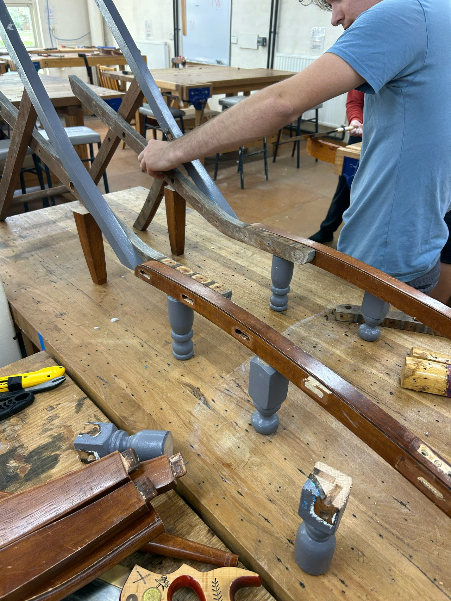
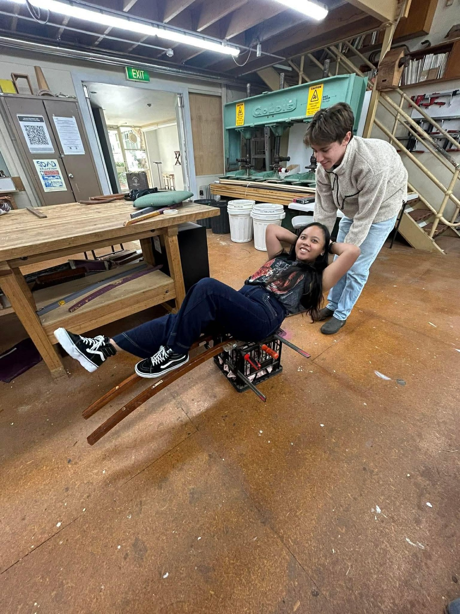
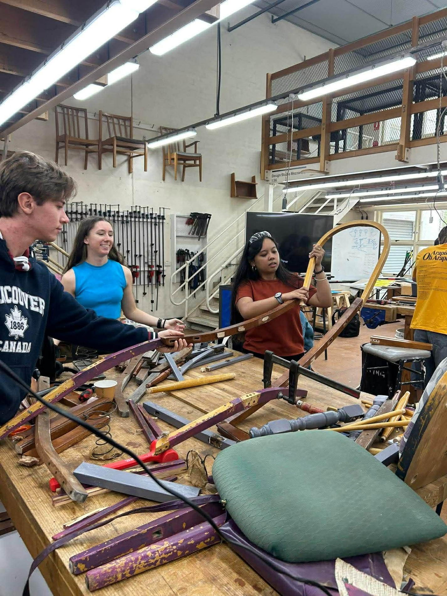
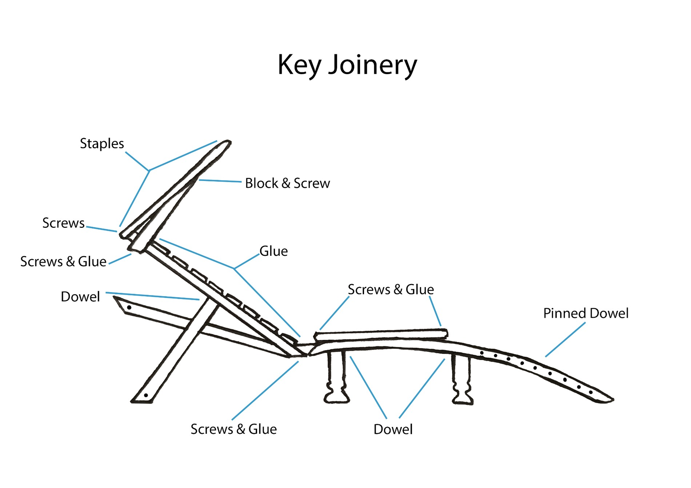

TIMBER / 03
Deconstruction / Reconstruction
- WORK
- Salvaged Lounge Chair
- YEAR
- 2026
- MEDIUM
- Reclaimed timber, repurposed upholstery, wood glue & mechanical fasteners
- CONTEXT
- Group university project · DESN2015, Mediating Spaces Through Object Design

Overview
Working with the group The Clamp-Downs, I helped design and build a new lounge chair using components dismantled from existing chairs. Instead of concealing the origin of our materials, we worked with their established curves, textures and dimensions, creating a reclining object from pieces that had previously served very different seating forms.
My particular role was technical coordination and hands-on fabrication. I arranged workshop access, liaised with the technical officer and helped translate the team’s evolving ideas into something that could be assembled, tested and refined.
Design Brief
For DESN2015, our task was to deconstruct existing chairs and reconstruct the salvaged components into a new object that supports the body. The emphasis was on experimentation rather than beginning with a predetermined furniture design: we needed to investigate structure, ergonomics, available materials and the decisions that connect them.
We wanted the final object to be comfortable and functional while making creative use of the components we had. That required a balance between intuitive, improvised design and deliberate testing of joins, load paths and bodily contact points.


Process
Our starting point was an assortment of already-shaped components from four salvaged chairs. The long, curved pieces of timber caught our attention, and we quickly began holding them in different arrangements to see what kinds of support they could provide. We used short, timed prototyping exercises to generate alternatives without becoming too attached to our first idea.
An early deck-chair-like form felt promising because it distributed the body across a reclined seat and backrest. We explored alternative cushioning, backrest angles and frame orientations, including a cradle-inspired rocking-chair variation, before returning to the more elongated lounge-chair structure. A curved overhead frame and repurposed purple covering became distinctive elements of the final design.






Much of the fabrication was about connecting timber that had never been designed to fit together. We had to work around existing holes, different grains and old finishes. Depending on the connection, we used pre-drilled screws with glue, dowels, mortise-and-tenon joins formed with a tenon cutter, clamping and additional braces. We removed finishes at glue contact points to improve adhesion and tested connections before committing to them.
Ergonomics remained part of the design process throughout. Members of the group tried different recline angles and combinations of solid timber and upholstered supports. Rather than treating one person’s preference as definitive, we compared reactions and adjusted the geometry as a team.

Outcome
The finished chair retains the personality of its source materials but has a new, unified purpose. Its curved timber structure, reclined back, slatted support and reclaimed upholstery combine into a functional lounge chair. The assembly held up during peer testing at our Week 6 critique and demonstrated that our improvised approach could produce a structurally sound object.
For me, the project reinforced the value of making decisions through physical testing rather than trying to resolve every detail on paper. It also developed my confidence in leading technical tasks within a collaborative design process, where feasibility, comfort and visual expression had to be negotiated together.
Group: Christina Stewart, Jaye Jones, Mishra Jade Racines, Macy Follett and Will McCoubrie.
My contribution: Technical coordination, workshop access, problem-solving and hands-on fabrication.